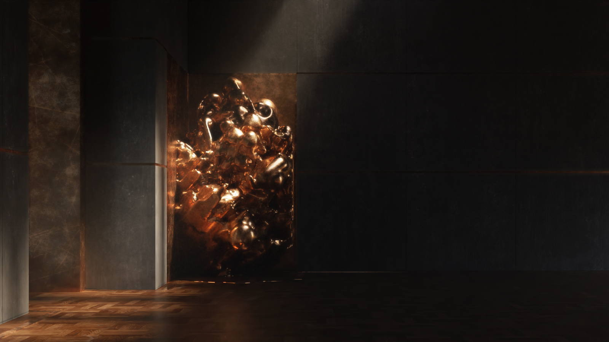
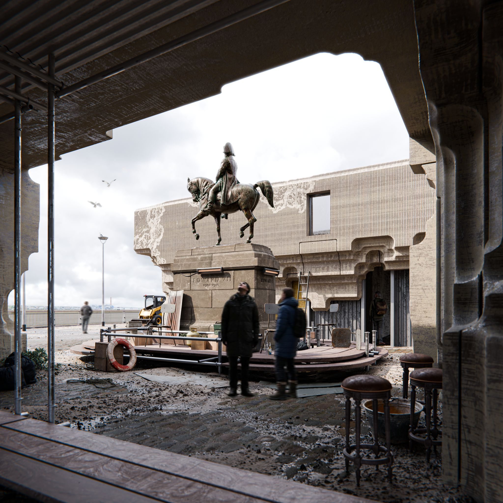

01
Strovolos Residences
Realities / 01
Between reality and imagined.
We are a multidisciplinary design practice working across spatial design, CGI visualisation, and animation. Our work is defined by precision, restraint, and a deep understanding of how people inhabit space.



Bronze collapsed, compressed, and left to cool in the dark. Digital sculpture exploring entropy, monument, and the architecture of forgetting.

A speculative project exploring the boundaries between the built and the unbuilt — where architecture begins to dissolve into landscape.